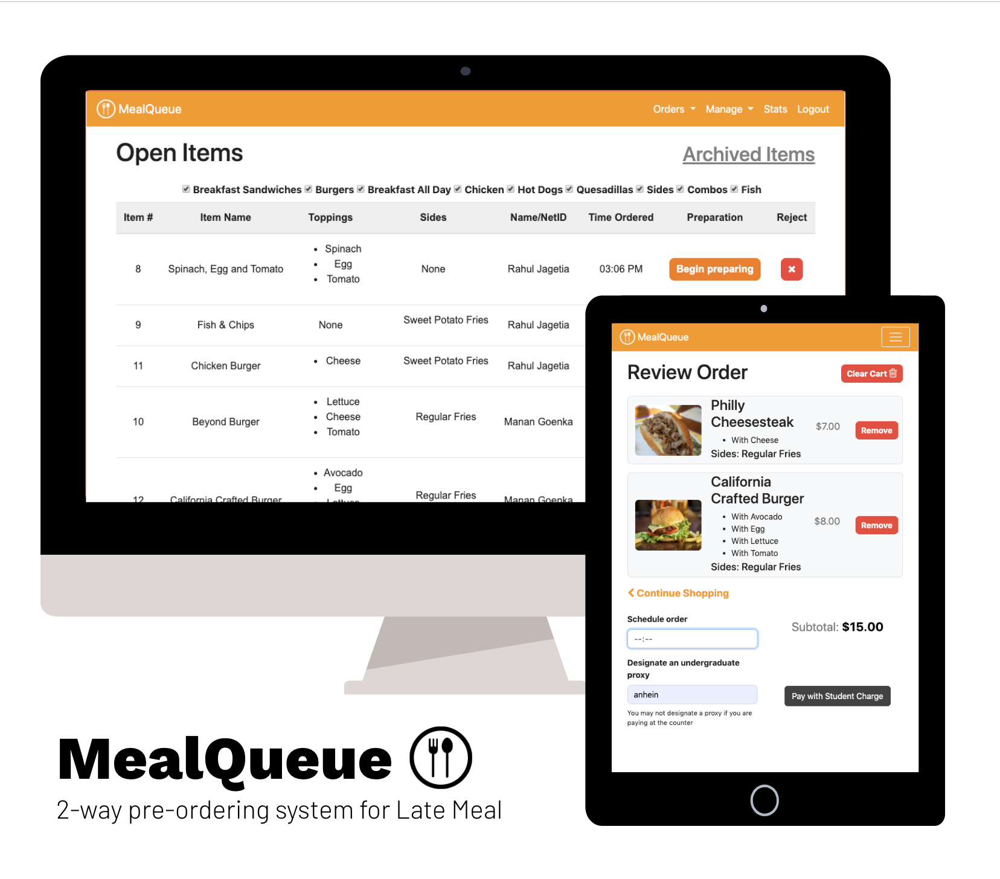
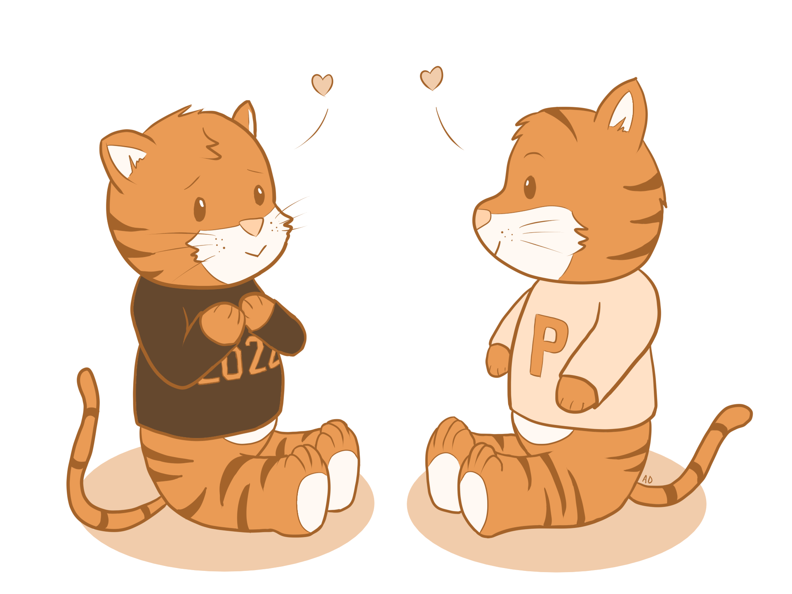
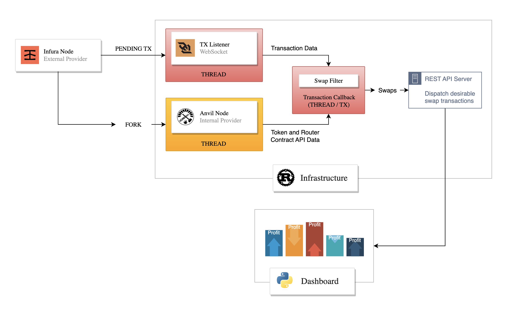
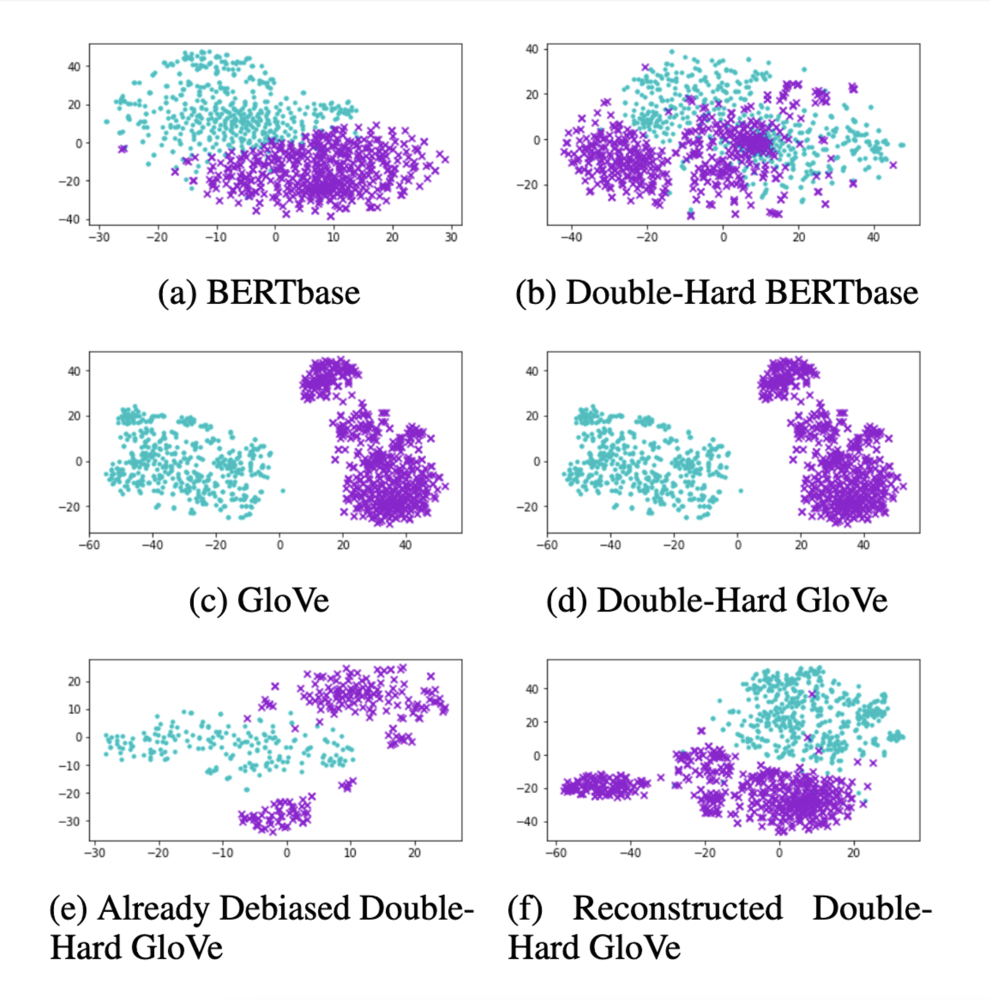
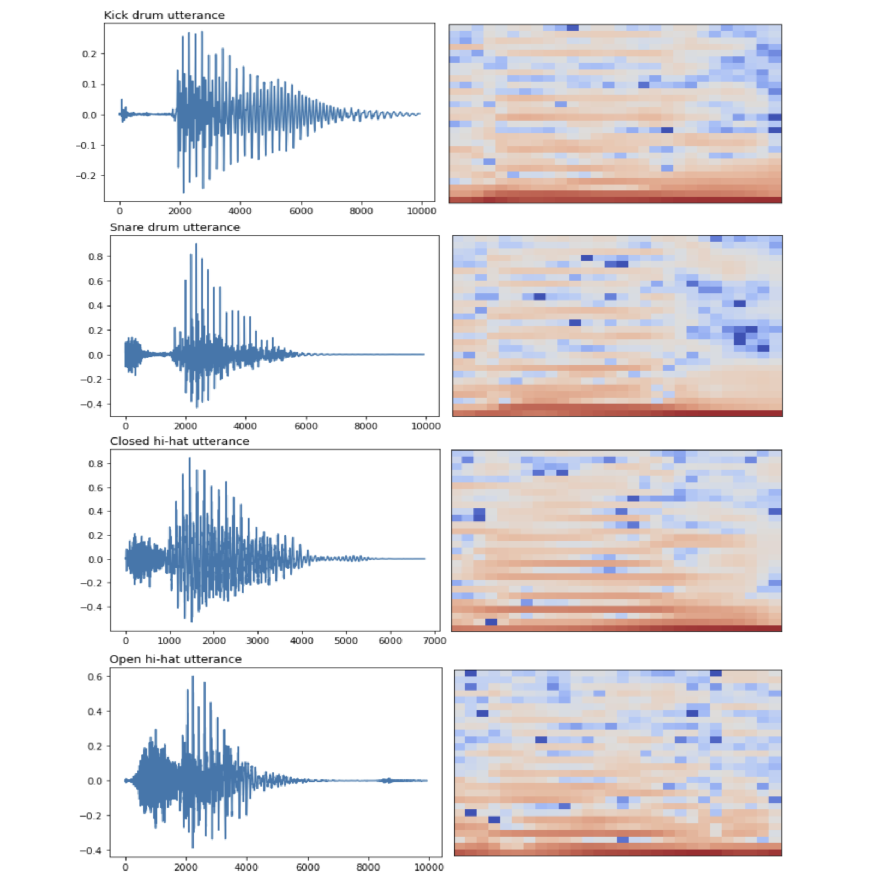
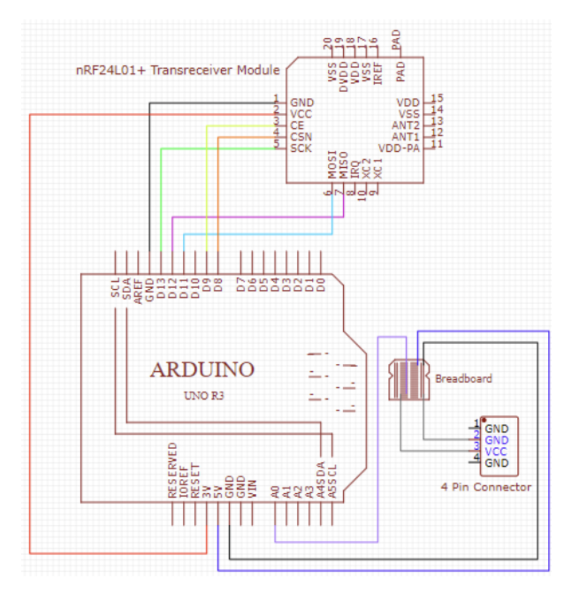

Oleg Golev
I am a 2nd year MSE student studying CS at Princeton
University.
This website details my projects and exploratory research during the past few years. My interests converged on DBMS, high-concurrency design, and edge-cloud computing.
This website details my projects and exploratory research during the past few years. My interests converged on DBMS, high-concurrency design, and edge-cloud computing.
Visit My LinkedIn
to See my Work Experience
Some Things I Coded Up:


MealQueue
MealQueue is designed for use by Late Meal, an off-hours dining facility at Princeton
University. The MealQueue application allows students to place orders with Late Meal ahead
of time, thereby eliminating the wait time associated with ordering, preparing, and paying.
MealQueue helps the Late Meal staff by allowing them to digitally interact with a queue
of food orders, replacing the current pen-and-paper system. MealQueue also enables
Campus Dining administrators to monitor order volume via a dashboard with graphs
and statistics generated directly on the website.
Unfortunately, the rollout of the application was postponed and later canceled due to the University’s response to the COVID pandemic which involved the temporary closure of Late Meal.
Unfortunately, the rollout of the application was postponed and later canceled due to the University’s response to the COVID pandemic which involved the temporary closure of Late Meal.

TigerCrush
TigerCrush allows any Princeton University student to log in and list their crushes.
Until a match is made, a user is identified to their crushees as a "secret admirer."
If two people have a crush on each other, the love birds are revealed to each other, and
thus a match is made.
The application was launched during the COVID pandemic, quickly gathered over 1000 unique visitors, and got featured in this article by The Daily Princetonian.
The code is publicly accessible in the following GitHub repository.
The application was launched during the COVID pandemic, quickly gathered over 1000 unique visitors, and got featured in this article by The Daily Princetonian.
The code is publicly accessible in the following GitHub repository.

Some Papers I Wrote:
Automated Just-In-Time (JIT) Liquidity Provision on the Uniswap
Protocol
In this project, we build a system (see GitHub)
that (1) watches the Ethereum mempool for Uniswap V2 transactions in real time, (2) filters
for transactions that are viable for a JIT liquidity attack, and (3) uses Streamlit to
monitor the statistics, including the potential profit, of executing a JIT liquidity attack
on the identified transactions. This system can help traders make better decisions about JIT
liquidity provision as a potential trading strategy.

Survey of TinyML Methods for Detecting Humpback Whale
Vocalizations
In this study, we explore the tradeoffs between accuracy, model size, and training time for
humpback whale vocalization detection models. This project serves as an introduction to and
a surface-level investigation of TinyML techniques, including pruning, post-training
quantization, quantization-aware training, TFLite, and smart feature selection. Our findings
highlight the potential of using TFLite as a baseline for creating efficient models
while showing the importance of domain-specific knowledge in feature selection.
Survey of Blockchain
in IoT Applications
in IoT Applications
In this paper, we investigate the attempted integrations of blockchains into IoT
device systems. We find that the primary benefit that a private blockchain can provide to
IoT systems is its use case as a distributed database when the chain structure makes sense
for the data being stored (e.g. audit logs). In other use cases, we find that despite the
benefits of security and immutability, a blockchain is not the best solution to achieve
these properties in IoT systems, given the blockchain algorithms' costs, as well as
manufacturers' and customers' incentives.


Replicating the Double-Hard Gender Debiasing Algorithm with BERTbase
embeddings
Word embeddings computed from human-generated sources tend to encode a strong discriminative
gender bias which may affect downstream model output and performance. In this paper, we
replicate the Double-Hard Debias (DHD) algorithm on GloVe embeddings as done in the paper,
and then test the algorithm on BERTbase embeddings. Additionally, we reproduce the word
embedding association test (WEAT) to measure debias performance, assess gender-based
clustering performance of the most biased words on different embeddings, and evaluate the
debiasing algorithm using the embedding concept categorization. We find that DHD does not
significantly debias BERTbase but appears to improve its performance on the categorization
task over GloVe.
Deep Learning for
Automatic Transcription of
Human Beatboxing
Automatic Transcription of
Human Beatboxing
There are multiple products on the market which are able to transcribe human beatboxing and
drums to MIDI (e.g. Ableton Live). This paper specifically explores the deep learning
approaches to performing this task, assessing comparative performance and viability of three
network architectures (a fully-connected neural network, a VGG-block, and AlexNet) on human
beatboxing utterances extracted from the Amateur Vocal Percussion (AVP) dataset. We explore
the effect of phoneme-consistency on classification accuracy, the impact of adding MFCC
deltas and improvisation recordings for training, as well as the efficacy of our models in
classifying beatboxing utterances made by people whose samples were absent in the training
set.


Designing a Sensor System for Automated Water Depth Mapping in
AWD-based Rice Field Irrigation Structures
Compared to the traditional method of continuous rice field flooding, the Alternate Wetting
and Drying (AWD) approach is much more water- and nitrogen-efficient, beneficial to soil
quality maintenance, and enables intercropping. Sensor networks can be deployed to
measure water levels across a field to alert farmer when more water is needed. In this
project, we designed a proof-of-concept system consisting of a single sensor and a base
station device. The base station requests and receives water depth data from the sensor,
afterwards displaying it to the user. We built this system using two Arduino boards,
two NRF24L01+ modules, and an eTape sensor. We tested the system for robustness and
calibrated the eTape sensor output with manual measurements to ensure accuracy.